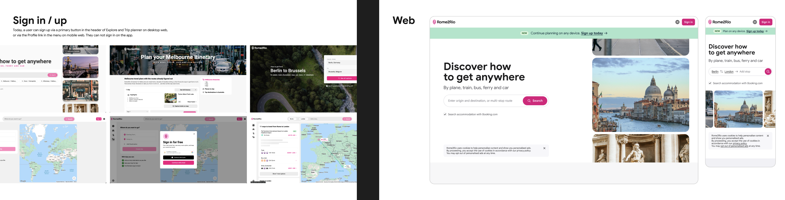
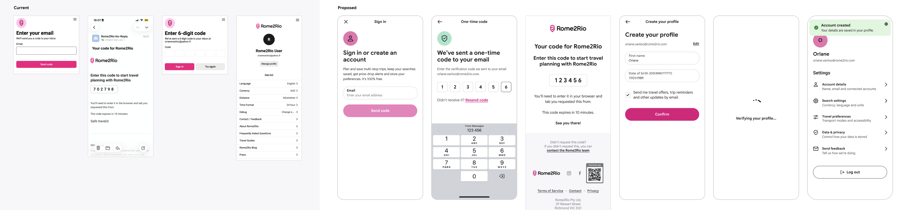
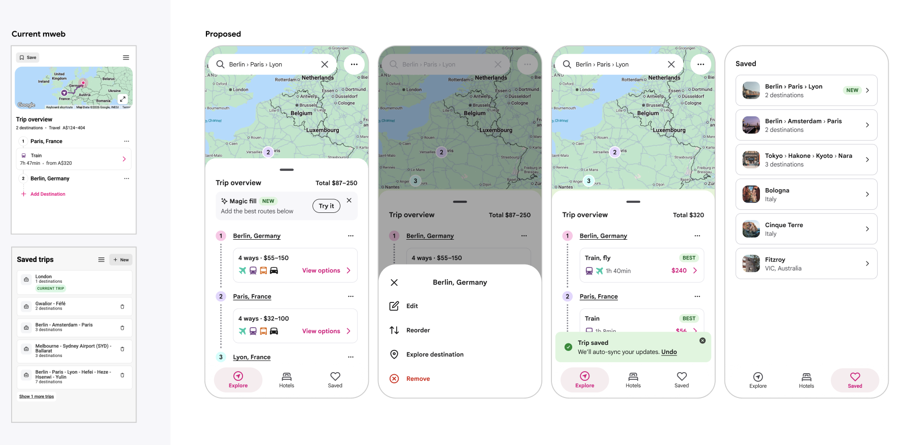
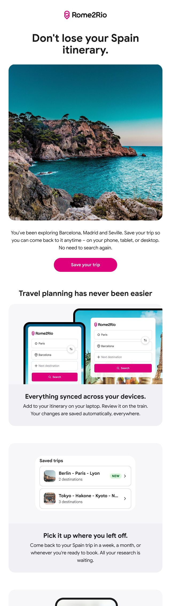

Rome2Rio · 2026 H2
Rome2Rio couldn't reliably identify when the same user came back. I led the product strategy to move users from anonymous browsing to logged-in accounts, combining awareness, frictionless sign-in, concrete value (save trips, price drops, profiles), and data quality work to achieve a 9x difference in return rates.
My role
Product Design Lead
Stakeholders
Product, engineering, marketing
Outcome
64% return rate (logged-in vs 7.2% anonymous)
Most Rome2Rio sessions were anonymous. There was little reason to log in, so cookies were the only way to track users – and they don't cross devices. The product couldn't tell if someone coming back on mobile was the same person who researched on desktop last week. The result: Rome2Rio had no reliable way to know who its repeat customers were, missing every opportunity to personalise, retain, or surprise them with saved trips and price alerts.
The data told the story: logged-in users returned at 64% weekly, versus 7.2% for anonymous users. A 9x difference. The strategic lever wasn't acquisition – it was unlocking the returning user base already there. Getting users to create accounts would transform the product's ability to know, retain, and serve its customers.

Sign-up and onboarding – Redesigned the full account creation flow. Frictionless option first (Google auth); email as a fallback. Guided data entry (traveller profiles, travel preferences) integrated into the sign-up journey rather than as a separate task.
Core features that drive value – Save trips for later, price drop alerts that notify when fares fall, traveller profiles to pre-fill names and ages across bookings, and Q&A so users can ask route-specific questions and share travel tips.
Email system – Built a data quality follow-up sequence that surfaces benefits users might be missing (saved trips, preference gaps, unanswered questions) and gradually improves account health over time.



"Logged-in users return at 9x the rate of anonymous users. The question wasn't how to acquire new customers – it was how to unlock the ones already there."